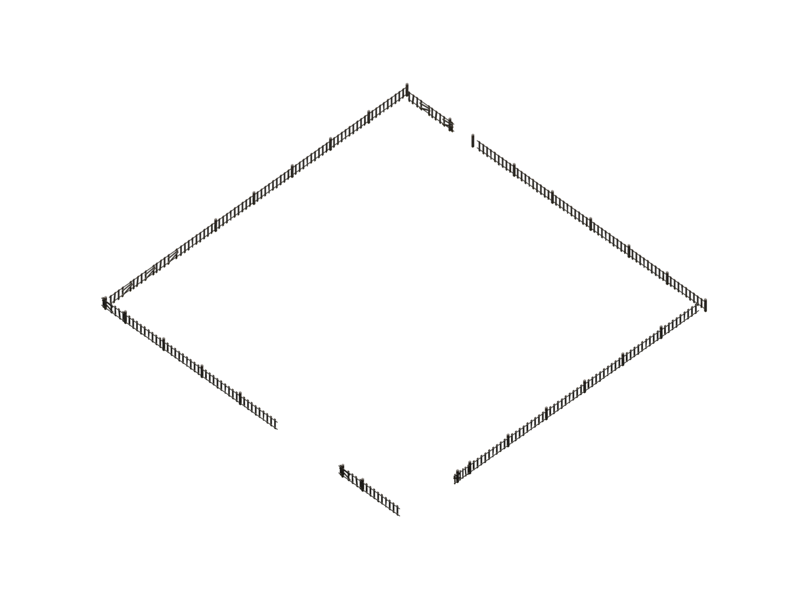

建筑素材
- 仓库取货口
unloader_11 个模式 · 1ed584992bfd最后人工审阅：— - 仓库存取线源桩
log_hongs_bus_source1 个模式 · f86a3e79a20a最后人工审阅：— - 仓库存货口
loader_11 个模式 · e67f5c973a7b最后人工审阅：— - 优质多味菇田块
soil_corp_mushroom_21 个模式 · 1efaa713be2e最后人工审阅：— - 优质青叶莓田块
soil_corp_strawberry_21 个模式 · 97949193aa95最后人工审阅：— - 优质青菜田块
soil_corp_cabbage_21 个模式 · 7c5452412b08最后人工审阅：— - 供电桩
power_diffuser_11 个模式 · df1515aae4b2最后人工审阅：— - 储气罐
gas_storager_11 个模式 · 9af893c6b2de最后人工审阅：— - 储液罐
liquid_storager_11 个模式 · ca822fa80039最后人工审阅：— - 分流器
log_splitter1 个模式 · 2162ab88e71c最后人工审阅：2026-09-23 20:06:26 - 协议储存箱
storager_11 个模式 · 906cacd3a51c最后人工审阅：— - 协议核心
sp_hub_11 个模式 · ea301e567572最后人工审阅：— - 反应池
mix_pool_11 个模式 · 2bb34f416627最后人工审阅：2026-09-23 21:39:24 - 固气转化机
transmuter_22 个模式 · 7b48b3342c03最后人工审阅：— - 塑形机
shaper_12 个模式 · 2cf0d5d389ab最后人工审阅：— - 多口暗管入口
udpipe_loader_21 个模式 · 895f5d642077最后人工审阅：— - 多口暗管出口
udpipe_unloader_21 个模式 · d6fca0a8ba09最后人工审阅：— - 多味菇田块
soil_corp_mushroom_11 个模式 · a457d2e363b5最后人工审阅：— - 天有洪炉
xiranite_oven_12 个模式 · 70d009812752最后人工审阅：— - 存取线基段
log_hongs_bus1 个模式 · 7128e804b52d最后人工审阅：— - 封装机
tools_assebling_mc_11 个模式 · 834c61c96c68最后人工审阅：— - 平薯田块
soil_corp_potato_11 个模式 · 6fde0caa0ef3最后人工审阅：— - 废水处理机
liquid_cleaner_11 个模式 · 5bc9214e77c7最后人工审阅：— - 扩容反应池
mix_pool_21 个模式 · e666516f8b21最后人工审阅：— - 拆解机
dismantler_12 个模式 · 64f6841ec7ac最后人工审阅：— - 提纯机
liquid_purifier_12 个模式 · 288ea756562a最后人工审阅：— - 暗管入口
udpipe_loader_11 个模式 · c5c941eb8775最后人工审阅：— - 暗管出口
udpipe_unloader_11 个模式 · fe81f894b0e4最后人工审阅：— - 柑实田块
soil_moss_21 个模式 · ab9ddbf9f44a最后人工审阅：— - 桥接器
log_connector1 个模式 · 4f8bc5882d63最后人工审阅：2026-09-23 20:06:26 - 次级协议核心（四级）
sp_sub_hub_11 个模式 · 7d50bf78e431最后人工审阅：— - 气体反应炉
gas_reactor_11 个模式 · a491774a55dd最后人工审阅：— - 气体收集泵
gas_pump_11 个模式 · 7b342ac674b6最后人工审阅：— - 气体散布机
vaporizer_11 个模式 · 7534dbb327f8最后人工审阅：— - 水泵
pump_11 个模式 · f249a164a5bd最后人工审阅：— - 汇流器
log_converger1 个模式 · 4b0582ecb306最后人工审阅：2026-09-23 20:06:26 - 洒水机
squirter_11 个模式 · a89214a0bbeb最后人工审阅：2026-10-15 00:42:03 - 液气转化机
transmuter_12 个模式 · 47531a9716f6最后人工审阅：— - 灌装机
filling_powder_mc_12 个模式 · 982c18253273最后人工审阅：— - 灰芦麦田块
soil_sp_11 个模式 · 22e70dd21a39最后人工审阅：— - 热能池
power_station_11 个模式 · 7d0bc52a9b45最后人工审阅：— - 物品准入口
log_conditioner1 个模式 · 04f8e93a1515最后人工审阅：2026-09-23 20:06:26 - 球豆田块
soil_corp_bean_11 个模式 · dec0cc76bf8a最后人工审阅：— - 琼叶参田块
soil_sp_31 个模式 · 3d037246a3ae最后人工审阅：— - 白瓜田块
soil_corp_whitegourd_11 个模式 · f7a7d6c488bc最后人工审阅：— - 砂叶田块
soil_moss_31 个模式 · 60527d26c8d8最后人工审阅：— - 研磨机
thickener_11 个模式 · 176d51cd1567最后人工审阅：— - 种植机
planter_12 个模式 · 5a9af1339468最后人工审阅：2026-09-23 21:42:11 - 管道准入口
pipe_conditioner1 个模式 · 3e8734dac3e4最后人工审阅：2026-09-23 20:06:26 - 管道分流器
pipe_splitter1 个模式 · a1a141777906最后人工审阅：2026-09-23 20:06:26 - 管道和传送带
logistics1 个模式 · 0cfb05f1236b最后人工审阅：— - 管道桥接器
pipe_connector1 个模式 · ab08b104acd5最后人工审阅：2026-09-23 20:06:26 - 管道汇流器
pipe_converger1 个模式 · 5ed79e588280最后人工审阅：2026-09-23 20:06:26 - 籽油花田块
soil_corp_canolaflower_11 个模式 · daaa321dc882最后人工审阅：— - 粉碎机
grinder_11 个模式 · c7cf6ebe10ff最后人工审阅：— - 精炼炉
furnance_12 个模式 · 319cf655de64最后人工审阅：— - 脆蔗田块
soil_corp_sugarcane_11 个模式 · 84ee7bf90cca最后人工审阅：— - 自动农植机
int_system_farm_terminal5 个模式 · 90272acab06b最后人工审阅：— - 芽针田块
soil_grass_21 个模式 · 567960c5e5d2最后人工审阅：— - 苦叶椒田块
soil_sp_21 个模式 · e3b2d155f536最后人工审阅：— - 茄果田块
soil_corp_tomato_11 个模式 · ceb0fd27fc63最后人工审阅：— - 荞花田块
soil_moss_11 个模式 · 411b1ab884a1最后人工审阅：— - 装备原件机
winder_11 个模式 · 975fe862369d最后人工审阅：— - 配件机
component_mc_11 个模式 · 678cb2000553最后人工审阅：— - 酮化灌木田块
soil_bbflower_11 个模式 · 1c5ec454497c最后人工审阅：— - 采种机
seedcollector_11 个模式 · d9ced71db478最后人工审阅：— - 金石稻田块
soil_sp_41 个模式 · bc5b96be0f6f最后人工审阅：— - 锦草田块
soil_grass_11 个模式 · e6f068c39fad最后人工审阅：— - 青叶莓田块
soil_corp_strawberry_11 个模式 · 90b00b3d1cea最后人工审阅：— - 青菜田块
soil_corp_cabbage_11 个模式 · f2c2133607a3最后人工审阅：—